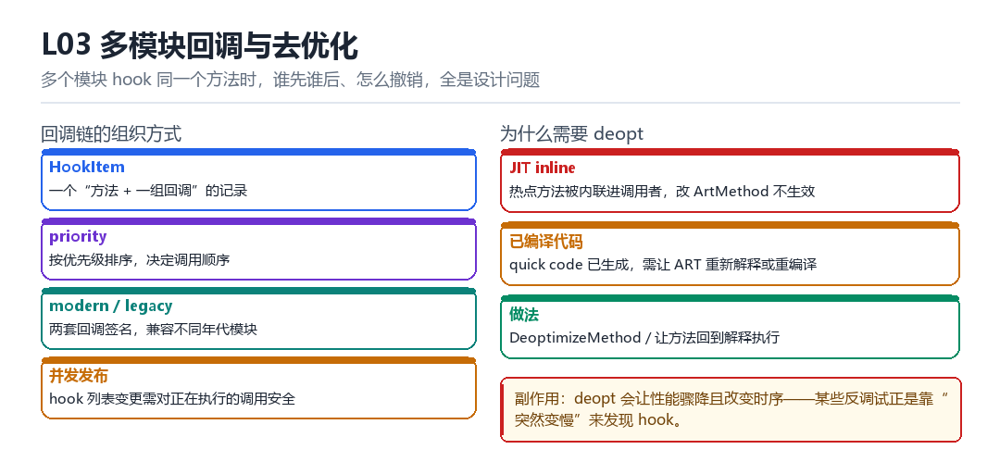

多模块回调与去优化
HookItem、modern/legacy callback、priority、并发发布、JIT inline、deopt
多个模块 hook 同一个方法时，谁先谁后、怎么撤销，全是设计问题。
3.1 回调链的组织

| 概念 | 作用 | 难点 |
|---|---|---|
| HookItem | 一个“方法 + 一组回调”的记录 | 生命周期管理 |
| priority | 决定调用顺序 | 顺序错会导致行为不一致 |
| modern / legacy | 两套回调签名 | 兼容不同年代模块 |
| 并发发布 | 列表变更时要安全 | 读者可能在遍历中 |
3.2 为什么需要 deopt
ART 的 JIT 会把热点方法内联进调用者。这时候你改 ArtMethod 的 entrypoint，但调用者里已经是一份内联后的代码，根本不会去看 entrypoint——hook 就“失效”了。
解决办法是 deopt：让 ART 把已编译的方法退回解释执行，或者重新编译。代价是性能骤降，而且会改变时序。
// 找到所有包含该方法的栈帧，标记为 deoptimizable
// 触发一次 deopt，让 ART 重新解释执行
// 之后 entrypoint 的替换才生效3.3 本章自测
- 多个模块 hook 同一方法，顺序怎么定？
- JIT 内联为什么会让 hook 失效？
- deopt 的代价是什么？
- 为什么“变慢”能被用作检测信号？
3.4 深入：回调顺序错了会怎样
假设模块 A 负责解密、模块 B 负责校验。如果 B 先执行，它看到的是密文，校验必然失败。这就是“优先级”存在的意义——它不是可选项，而是正确性的一部分。
| 顺序 | 结果 |
|---|---|
| A → B | 正确 |
| B → A | 校验失败 |
3.5 实战：怎么调试回调顺序
hook.setPriority(100); // 数字越小越先
// 每个回调第一句打印自己的名字与序号3.6 原理推演：为什么“去优化”是必需的
因为 JIT 会把热点方法“内联”到调用者里。内联之后，调用者里已经没有“调用”这个动作了——它直接执行被内联方法的指令。这时候改 entrypoint 完全无效。
| 状态 | 调用方式 | 改 entrypoint 是否有效 |
|---|---|---|
| 解释执行 | 查 ArtMethod 跳转 | 有效 |
| JIT 编译（未内联） | 直接跳已编译代码 | 有效（但需清缓存） |
| JIT 编译（已内联） | 指令已展开 | 无效 |
所以“deopt”不是优化，而是“让 hook 生效的必要步骤”。
3.7 数据细节：deopt 的代价
| 指标 | deopt 前 | deopt 后 |
|---|---|---|
| 执行速度 | 1x | 0.1~0.3x |
| 内存占用 | 低 | 升高（解释器状态） |
| 恢复方式 | — | 重新 JIT |
3.8 深入：HookItem 的生命周期
一个 HookItem 从“创建”到“销毁”要经过：注册 → 生效 → 可能被其他模块追加回调 → 撤销。每一步都要考虑“此时是否有调用正在执行”。
| 阶段 | 风险 | 处理 |
|---|---|---|
| 注册 | 与正在执行的调用竞争 | 加锁或原子替换 |
| 追加回调 | 顺序变化影响语义 | 按优先级重排 |
| 撤销 | 调用方还持有旧引用 | 延迟释放 |
“延迟释放”是这里的关键技巧：撤销时先把条目从“活跃列表”摘掉，等一个宽限期（比如一次 GC 或一个时间窗口）之后再真正释放。这样正在执行的调用不会踩空。
3.9 深入：modern 与 legacy 回调的差异
| 维度 | legacy | modern |
|---|---|---|
| 参数 | 打包成数组 | 按签名展开 |
| 返回值 | 手动构造 | 直接返回 |
| 性能 | 较低（装箱） | 较高 |
| 兼容 | 老模块 | 新模块 |
同时支持两套的代价是“每个 hook 点都要维护两条路径”。所以成熟框架通常会在“加载模块时”就把 legacy 适配成 modern，运行时只走一套。
3.10 实战：怎么确认“hook 真的生效了”
1. 注册成功：HookItem 出现在活跃列表里
2. 被调用：回调里有日志 / 计数
3. 行为改变：目标方法的返回值或副作用变了两个模块盯上了同一个方法
TelephonyManager.getDeviceId 上挂了两个模块：一个改返回值，一个只打日志。现在问题来了——打日志的那个该先跑还是后跑？如果改值的模块先跑，日志记下的就是假值；如果日志先跑，改值模块 setResult 之后它还有没有机会收尾？再叠一层：其中一个模块被用户在管理器里临时禁用，而此刻恰好有一条调用正在链上走到一半。这些都不是边角情况，而是 HookItem 每天要处理的日常。
更麻烦的是 ART 自己。热点方法会被 JIT 内联进调用者，调用者里已经是一份展开后的机器码，压根不会再去查 ArtMethod 的入口指针。你在 L02 里辛辛苦苦换掉的 entry_point_from_jni_，对这段内联代码完全不可见。所以挂回调和去优化必须是一次原子动作，中间不能留出让 JIT 继续用旧代码的窗口。
回调链是怎么串起来的
- 模块 → LSPosedBridge：每个模块调用
XposedBridge.hookMethod并传入XC_MethodHook与 priority；结果是框架按'方法'建一个HookItem，把它登记进全局表。 - 框架 → HookItem：同一个方法被多个模块 hook 时，框架不重复改 ArtMethod，只把新回调插入该
HookItem的有序集合；结果是入口只被替换一次，回调却可以无限叠加。 - 框架 → 排序器：
XCallback的 priority（默认 50，最高 10000）决定 before 正序、after 逆序；结果是'外层'模块能包住'内层'模块，形成洋葱式的调用结构。 - 分发器 → 各回调：依次调用
beforeHookedMethod(param)；任一回调setResult或setThrowable就是returnEarly，跳过剩余 before 与整个原方法；结果是短路语义可以预测。 - 分发器 → backup → after：原方法（或短路结果）写回
param.result，after 按逆序执行，仍可改写结果；结果是最后一个说话的往往是最先注册的模块。 - 管理器 → 集合（并发）：卸载模块时改的是 Copy-On-Write 集合，遍历中的调用持有旧快照；结果是当前这一轮调用会走完旧链，下一轮才看不到被摘掉的回调。
第 6 拍是很多'明明禁用了却还生效一次'的根源。COW 集合换来的是遍历时不会抛 ConcurrentModificationException，代价是撤销不即时。做回归用例时，卸载后至少要再跑一轮空调用再断言，否则会得到假失败。
为什么必须让 JIT 忘掉它
- JIT 编译调用者
caller()时，把被调方法callee()的字节码内联进caller的机器码。 - 此后
caller调用callee不再查 ArtMethod，直接执行展开后的指令——hook 对新入口完全失明。 - 框架在发布回调时调用
Instrumentation/ JIT code cache 的去优化接口，把相关编译码标记为失效。 - ART 让这些栈帧退回解释执行或重新编译；新的解释路径每次都查
ArtMethod，于是走到蹦床。 - 代价：去优化后的一小段时间内该路径明显变慢，且时序改变，可能把偶发竞态暴露出来。
注意第 3 步的时机：去优化必须发生在改入口之前或与之成对，不能等回调都注册完了才想起来。否则中间那几毫秒里，另一个线程上的 caller 依旧跑着内联的旧代码，测出来的'偶发不生效'会让排查方向整个跑偏。
可复现：把去优化前后的耗时打出来
// 在 handleLoadPackage 里对目标方法连续压测，记录 p50 / p95
long[] ts = new long[2000];
for (int i = 0; i < ts.length; i++) {
long a = System.nanoTime();
String v = Target.sign("payload"); // 被 hook 的方法
ts[i] = System.nanoTime() - a;
if (!"expected".contentEquals(v)) Log.e("probe", "bad result at " + i);
}
java.util.Arrays.sort(ts);
Log.d("probe", "p50=" + ts[1000] + " p95=" + ts[1900]);
// 对照：未挂回调时跑同一段循环，留一份基线看到什么算成功：2000 次调用无 bad result，p50 稳定在同一数量级，且回调日志条数恰好等于调用次数；去优化刚发生的那一两轮可以慢，但随后应回落到稳定值。看到什么算失败：返回值出现'未 hook 时的原值'且集中在预热后的批次——典型的 JIT 内联没被打掉；或者回调条数少于一两次，说明有线程跑在旧编译码上。补一条 adb logcat -s probe:V | grep bad 统计失败次数，再对照未注入基线，别把设备本身的调度抖动算到框架头上。
| 现象 | 最可能的原因 | 验证动作 | 修法 |
|---|---|---|---|
| hook 偶发不生效 | JIT 内联未去优化 | 预热后再压测，看失效是否集中在热路径 | 发布回调时成对触发 deopt |
| 禁用模块后仍生效一次 | COW 快照遍历中 | 卸载后再跑一轮空调用 | 等下一轮再断言 |
| after 拿到的值被改 | 多个模块都 setResult | 打印 priority 与调用顺序 | 约定 priority 分层 |
| 耗时突然涨十倍 | deopt 后解释执行 | 对比 p50 与基线 | 等待重新编译或降低采样权重 |
| before 里抛异常后崩溃 | 异常未走 param.throwable | 检查是否用 setThrowable | 统一异常出口 |
回调发布时机与第三部 F03 的 Java.perform 是同一类问题：都要求'在正确的线程与正确的时刻'改动 ART 状态，只是 Frida 靠排队、LSPosed 靠 COW 集合。去优化与 F07 的 Stalker 挂起线程再改执行流也能对读——一个针对解释器与 JIT，一个针对翻译后的代码，共同前提是'别在别人跑着的时候改'。训练营 T03 那轮'隐藏 → 检测 → 改进'，最容易漏改进的就是这条时延曲线。